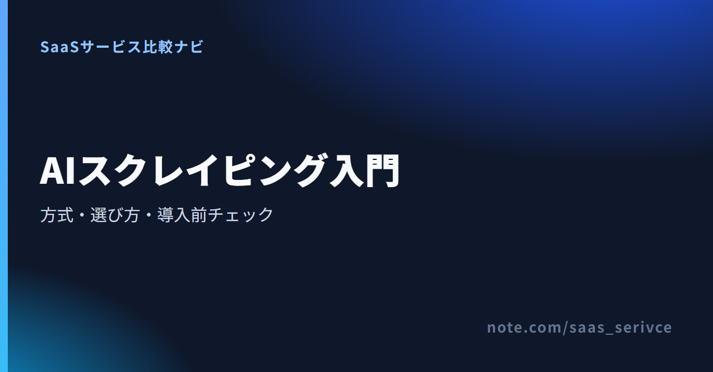
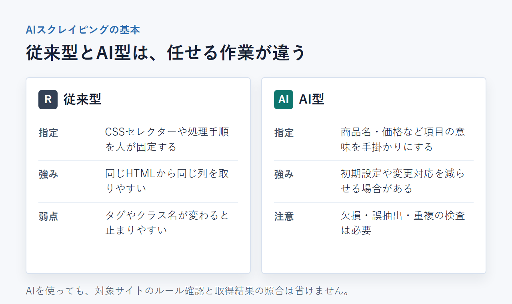
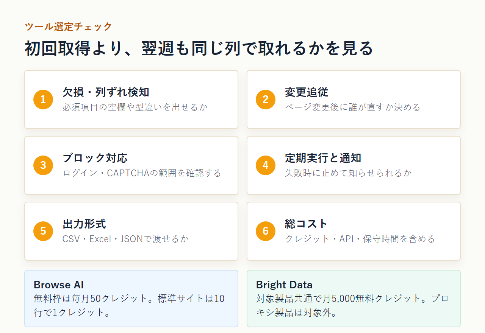
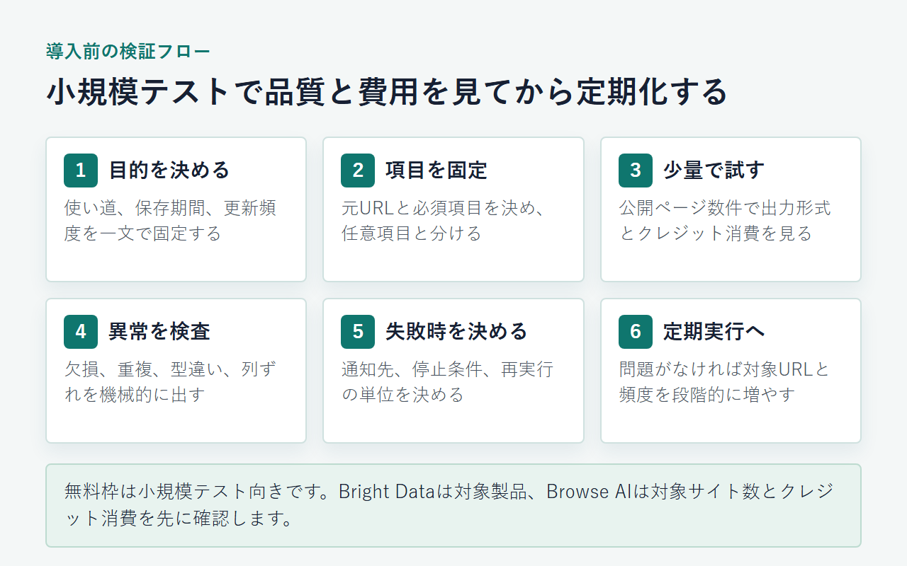

AIスクレイピングとは？4つの方式・選び方・おすすめツールを解説
AIスクレイピングは、Webページから必要な項目を見つけ、取得や整形の一部をAIで補助・自動化する方法です。生成AIスクレイピングやスクレイピングAIという表記も、この記事では4方式に分けて扱います。
方式の違い、選び方、ツール、費用、導入前の注意点まで紹介します。
AIスクレイピングは目的に応じて4つの方式から選ぶ
プログラム作成を助ける方式と、取得処理をAIに任せる方式は別物です。少量の定期監視ならノーコード型、大量取得やシステム連携ならAPI型が候補になります。
- コード生成：実装をAIに補助させる
- ノーコード：画面操作で取得を設定する
- API基盤：大量取得をシステムへ組み込む
- MCP：AIから検索・取得を呼び出す
- 選ぶ軸：量・頻度・保守・検証
迷ったら、画面操作で少量から始めるならBrowse AI。大量取得やAPI連携まで見込むならBright Dataが候補です。
Bright Dataの登録先では、対象製品の無料クレジットとAPI型の料金条件を見られます。プロキシ製品は月次無料クレジットの対象外です。

コード生成・ノーコード・API・MCPを混同しない
AIにPythonコードを書かせる方法では、実行環境や保守を利用者が担います。ノーコード型は、ブラウザ上で取得箇所や実行間隔を設定する仕組みです。
API型は、取得処理を自社システムから呼び出します。MCP型では、ClaudeなどのAIから検索やページ取得の機能を選んで実行します。
どれもAIスクレイピングと呼ばれますが、利用者に残る作業は同じではありません。コードを書く人がいるか、結果を定期利用するかで入口が変わります。
少量監視と大量取得では向く仕組みが違う
数ページの価格や在庫を定期的に見るなら、画面で設定できるノーコード型から始められます。現場の担当者が取得対象を自分で変えたい場面にも向きます。
一方、多数のURLを継続処理し、JSONを社内システムへ渡すならAPI型が候補です。認証、失敗時の再実行、保存先までコードで管理できます。
対象URLの数と実行頻度、保守する担当者を先に決めると、向く仕組みを絞れます。
AIスクレイピングと従来型の違い
従来型はHTML構造やセレクターを人が細かく指定します。AI型は項目の意味理解や抽出ルール作成を補助しますが、結果の正しさまで自動で保証するものではありません。
- 従来型：セレクターや処理手順を固定する
- AI型：項目の候補や構造を推定する
- 強み：初期設定や変更対応を減らせる場合がある
- 限界：欠損・誤抽出・重複は残り得る
- 共通：対象サイトのルール確認が必要

従来型は取得ルールを人が固定する
従来型では、商品名はこのCSSセレクター、価格はこの属性というように指定します。条件が固定されるため、同じHTMLから同じ列を取る処理を追いやすい方式です。
ただし、対象ページのタグやクラス名が変わると処理が止まります。ページごとに構造が違う場合は、ルールを増やす作業も発生します。
取得件数が少なく構造が安定しているなら、従来型で十分なこともあります。AIを加えるかどうかは、変更対応にかかる手間と取得品質を比べて決めます。
AI型は項目認識とルール作成を補助する
AI型は、「商品名」「価格」「会社名」といった項目の意味を手掛かりにします。自然文から抽出条件を作ったり、異なるページの表記をそろえたりする方式もあります。
スクレイピングAIにコードを書かせる場合、AIが担うのは実装の補助です。生成されたコードの実行やエラー対応まで、自動で引き受けるとは限りません。
取得そのものをサービスへ任せる場合は、ノーコード画面やAPIを使います。同じ「AIスクレイピング」でも、コード生成と取得基盤は分けて考える必要があります。
AIでも誤抽出やサイト変更はなくならない
項目をAIが推定しても、価格欄に割引前の数字が入ることがあります。商品名が空欄になる、同じ行が重複する、列の型が変わるといった問題も残ります。
サイト変更へ自動追従する機能があっても、正しい列が維持されたかは別の話です。必須項目の欠損と重複を検査し、元ページと照合する工程を設けます。
ログインやCAPTCHAも、AIというだけで通過できるものではありません。対象サイトの制限と、利用するサービスの対応範囲を切り分けてください。
4つの方式の仕組みと向いている人
コード生成は開発者の補助、ノーコードは現場担当者の少量収集に合います。APIは継続・大量取得、MCPはAIとの対話型調査で使う方式です。
AIにスクレイピングコードを書かせる
開発者がプロンプトで要件を伝え、AIにPythonなどのコード案を作らせます。実行環境を用意し、生成結果を読んで修正できる人向けです。
- 設定する人：コードを確認できる開発者
- 向く量・頻度：試作から定期処理まで
- 保守する人：自社の開発担当者
- 主な注意：誤ったコードや規約違反を見落とさない
初期実装を早く終えられても、対象ページの変更検知や例外処理は残ります。LLM APIを使う場合は、スクレイピング先とは別に利用料も発生します。
ノーコード画面で取得ルールを作る
ブラウザ画面で対象箇所を選び、ロボットやタスクとして保存します。コードを書かずに始めたい営業、マーケティング、ECの担当者に向いています。
- 設定する人：対象データを理解する現場担当者
- 向く量・頻度：少量取得や定期監視
- 保守する人：設定を変更できる業務担当者
- 主な注意：クレジット消費と対象サイト数
操作が簡単でも、取得結果の検品は必要です。無料枠では実行回数だけでなく、行数や対象サイト数にも上限が設けられる場合があります。
APIで大量取得をシステムへ組み込む
自社システムからAPIを呼び出し、取得結果をJSONなどで受け取ります。大量URLの処理や、データベースへ定期保存する仕組みを組みたい企業向けです。
- 設定する人：APIを扱える開発者
- 向く量・頻度：継続的な大量取得
- 保守する人：開発・データ基盤の担当者
- 主な注意：認証、課金単位、再実行の設計
API型は、処理順と保存形式を固定できます。失敗したURLだけを再実行する仕組みや、費用が想定を超えたときの停止条件も用意します。
MCP・AIエージェントから取得機能を呼び出す
MCPでは、ClaudeなどのAIが登録済みの検索・取得ツールを呼び出します。調べながら対象URLや条件を変える、対話型の情報収集に合う仕組みです。
- 設定する人：MCP接続を準備できる担当者
- 向く量・頻度：調査や試行錯誤
- 保守する人：接続先と認証を管理する担当者
- 主な注意：実行順と出力が毎回同じとは限らない
定期バッチの再現性を重視するならAPIが向く場合もあります。調査をMCPで試し、手順が固まった処理だけAPIへ移す方法も選べます。
Bright Dataでは、API型とMCP型の製品を確認できます。無料クレジットを使う前に、選んだ製品が対象かを見てください。
ツールは再現性・変更追従・総コストで選ぶ
初回に取得できるだけでは足りません。翌週も同じ列で取れるかが判断の軸です。失敗を検知できるか、サイト変更後に誰が直すかも先に決めます。
- 必須項目の欠損や列ずれを検知できるか
- ページ変更後に自動追従するか
- ログイン・CAPTCHA・ブロックへ対応するか
- 定期実行と失敗通知を設定できるか
- CSV・Excel・JSONなど必要形式で出せるか
- クレジット、LLM、プロキシ、保守を含む費用

同じ条件で取り直せるかを見る
同じURLと同じ必須項目を渡し、結果の列名と型がそろうかを見ます。価格を数値として扱うなら、通貨記号や桁区切りを除いた値も保存します。
元URLと取得時刻を残すと、空欄や異常値が出たときに追跡できます。全件を目視するのではなく、欠損、重複、型の不一致を機械的に出す設計が現実的です。
サイト変更と取得失敗を誰が直すか決める
自動追従を掲げるツールでも、変更後の項目が正しいとは限りません。失敗通知を受ける人と、設定を直す人を決めておきます。
ノーコード型は現場担当者が修正できるか、API型は開発者がログとエラー内容を追えるかを確かめます。導入前に短い障害対応の手順も作ります。
月額以外のクレジット・API・保守費も見る
表示された月額だけで総額は決まりません。取得行数、ページ数、リクエスト数、転送量のどれで減るのかを確認します。
さらに、LLM API、プロキシ、クラウド実行環境、CAPTCHA対応が別料金になる場合があります。担当者が毎週修正するなら、その時間も導入費に含めます。
おすすめツールはBright DataとBrowse AI
API連携やブロック対応を見込むなら、Bright Dataの無料対象製品が検証候補です。画面操作で少量取得や定期監視を試すならBrowse AIが候補です。
Bright Data｜大量取得・API・ブロック対応をまとめたい人向け
Bright Dataは、AI Web ScraperやWeb Scraper APIを含むWebデータ収集基盤です。API連携やブロック対応を含む構成を試したい企業の候補になります。
- 向く場面：大量取得、API連携、ブロック対応
- 無料範囲：対象製品共通で月5,000クレジット
- 日本語：製品・料金ページは日本語。管理画面・サポート言語は未確認
- 支払い：カード、PayPal、Alipayなど。日本発行カード・JCBは未確認
- 請求：電子請求書・領収書。日本の適格請求書対応は未確認
- 解約・返金：契約した料金は原則返金不可
月5,000クレジットは、Web Unlocker API、SERP API、Web Scraper APIなどの対象製品で共有します。毎月1日に5,000へ戻り、未使用分は繰り越せません。
Datacenter、ISP、Residential Proxiesは、この月次無料枠の対象外です。プロキシ製品には、新規登録時の1回限り$2分と、支払い方法追加後の$5分という別の試用条件があります。
日本語の製品・料金ページはあります。一方、管理画面全体の日本語UIと日本語での問い合わせ対応は、公開一次情報では確認できません。
登録ページから、Web Scraper APIなど無料対象の範囲と現在の課金単位を確認できます。
有料単価と最低利用条件は製品ごとに異なります。まずは無料枠で検証し、有料契約前には対象製品の料金条件を個別に比べてください。
Browse AI｜ノーコードで少量取得・定期監視を始めたい人向け
Browse AIは、画面操作でロボットを作り、取得や定期監視を設定するノーコード型のサービスです。開発者に依頼せず、少量から始めたい担当者に合います。
- 向く場面：少量取得、ページ監視、定期実行
- 無料範囲：毎月50クレジット
- 日本語：日本語データを抽出可能。日本語UI・サポートは未確認
- 支払い：JCBを含む主要カード、USD決済
- 請求：請求書PDFを取得可能。請求書払いはPremiumで相談可能
- 解約・返金：更新停止後も請求期間末まで利用可能
無料プランはロボット数が無制限で、対象Webサイトは2件、ユーザーは3人です。標準サイトでは10行の取得に1クレジットを使い、各タスクで最低1クレジットを消費します。
日本語を含むデータを抽出し、UTF-8で保持できます。管理画面の日本語UIと日本語サポートは、公開一次情報では確認できません。
請求書はBilling画面からPDFでダウンロードできます。解約は同画面から行い、返金は契約時期と利用状況に応じてサポートの審査を受けます。
公式サイトでは、無料プランの対象サイト数とクレジット消費をあわせて確認できます。
対象が2サイトで、月50クレジットに収まる小規模テストならBrowse AIが候補です。API連携やブロック対応も試す場合は、Bright Dataの無料対象製品と比べられます。プロキシ製品の試用条件は別です。
導入は小さく始めて取得結果を検証する
最初から大量取得せず、公開ページ数件で必須項目と出力形式を決めます。欠損、重複、列ずれを見てから定期実行へ進んでください。
- 1. 取得目的と保存期間を決める
- 2. 元URLと必須項目を固定する
- 3. 公開ページ数件で試す
- 4. 欠損・重複・型・列ずれを見る
- 5. 失敗通知と再実行手順を決める
- 6. 問題がなければ件数を増やす

取得目的・元URL・必須項目を決める
「競合価格を毎週更新する」のように、使い道と頻度を一文で決めます。次に、取得元URLと必須項目を固定します。
商品データなら商品名、価格、在庫、商品URLなどです。任意項目と必須項目を分けると、失敗と許容範囲を判定できます。
保存期間も先に定めます。毎回の最新値だけでよいのか、過去の変化を追うのかで、保存方法と必要容量が変わるためです。
少量データで欠損・重複・列ずれを確認する
公開ページ数件を使い、元ページと出力を照合します。成功表示だけで完了にせず、必須項目の空欄と同じURLの重複を見ます。
数値列に文字列が混ざっていないかも確かめます。価格、日付、在庫の型をそろえ、異常な値だけを抽出できるようにします。
無料枠は小規模テストに使えますが、対象外製品や消費条件があります。試す前に、何回または何行まで動かせるかを計算してください。
失敗通知と再実行を決めてから定期化する
取得件数が急に減ったときは、担当者へ通知します。失敗URL、エラー理由、実行時刻を残せば、全件をやり直さずに済みます。
再実行で重複が生まれない仕組みも必要です。URLや商品IDを基準に上書きするか、取得日時を付けて履歴として追加するかを決めます。
小規模テストで品質と費用を把握してから、対象URLと頻度を広げます。段階的に広げれば、誤った列を大量保存する事故を抑えられます。
Bright Dataのページでは、少量テストに使える対象製品と月次無料クレジットの条件を確認できます。
料金は無料枠・従量単位・追加費用に分けて見る
ノーコード型は月額とクレジット、API型はリクエストやレコードなどの従量単位が中心です。LLM APIや保守工数も総額に含めます。
- ノーコード型：月額とクレジット消費
- API型：リクエスト・レコード・転送量
- コード生成型：LLM APIと実行環境
- MCP型：呼び出すツール側の課金条件
- 共通：プロキシ・CAPTCHA・保守工数
- 日本向け：USD決済・カード・請求書
無料プランと無料クレジットは条件が違う
Browse AIのFreeは月額$0で、毎月50クレジットです。ロボット数は無制限ですが、対象Webサイト数とクレジット消費に上限があります。
Bright Dataは月額固定の無料プランではありません。新規アカウントへ、対象製品で共有する月5,000クレジットをカード登録なしで付与します。
無料という言葉だけで比べず、有効な製品、更新時期、繰り越し、消費単位を見ます。プロキシ製品の試用条件も別に分けてください。
月額だけでなく従量課金と保守工数も含める
Browse AIのPersonalは、年払いで$19/月、年額$228です。月払いは$48/月で、付与クレジットも年払いと異なります。
$19は、1ドル=158円換算（執筆時点の目安。為替で変動）で約3,002円です。為替手数料やカード会社の換算レートは別にかかる場合があります。
Bright DataのAI Web ScraperやAPIは、対象製品ごとに消費単位が異なります。リクエスト、レコード、転送量のどれに課金されるかを見てください。
Bright Dataの有料単価や最低利用条件は、対象製品を決めないと比べられません。無料クレジットで取得品質を確かめ、有料化の前に製品別の単価を確認します。
自前コードでも費用はゼロとは限りません。LLM API、クラウド環境、プロキシ、障害対応に使う時間を合計します。
日本からのカード・請求書・解約条件を確認する
Browse AIはStripe経由でJCBを含む主要カードを使えます。決済通貨はUSDです。請求書PDFは管理画面から取得でき、請求書払いはPremiumで相談できます。
Bright Dataはカードのほか、PayPalなどのオンライン決済に対応します。日本発行カードとJCBの可否は、公開一次情報では確認できません。Wire transferには利用条件があります。
Bright Dataの約款には、電子請求書・領収書の発行が記載されています。ただし、日本の適格請求書への対応と、管理画面からの取得手順は公開一次情報では確認できません。
Bright Dataの契約済み料金は原則キャンセル・返金不可です。固定期間のない契約は、事前通知により暦月末で終了できます。
Browse AIは更新を止めた後も、現在の請求期間末まで利用できます。
Browse AIの新規契約は、月払いなら14日以内、年払いなら30日以内が返金申請の期限です。ただし、製品を利用できず、サポートへ報告しても未解決の場合に限られます。
更新分は直近60日以内の1〜2回分で、更新後のクレジットが未使用の場合に申請できます。いずれもサポート審査があります。
海外サービスの会計・税務処理は契約形態で異なります。必要に応じて税理士に確認してください。
Bright Dataの料金画面では、無料対象と従量単位を現在の条件で照合できます。
Browse AIの公式サイトでは、月払いと年払いのクレジット数も見比べられます。
実行前に利用規約・robots.txt・取得対象を確認する
AIを使っても、対象サイトの利用規約や取得対象の扱いは変わりません。robots.txtだけで可否を決めず、目的、データの性質、アクセス頻度を個別に見ます。
- 対象サイトの利用規約を読む
- robots.txtと公開範囲を確認する
- 個人情報や非公開情報を取得しない
- 著作物の保存・再利用目的を確認する
- 同時接続と実行間隔を抑える
- ログイン・CAPTCHA回避を安易に行わない
robots.txtだけで利用可否を決めない
robots.txtは、クローラーがアクセスする範囲を示すための仕組みです。サイトの利用規約や契約条件、法律上の適否を一括して決めるものではありません。
技術的に取得できるかと、利用目的に問題があるかは別の判断です。対象サイトの規約を読み、禁止事項と提供されたAPIの有無を調べます。
個人情報・著作権・非公開情報を分けて考える
公開ページでも、氏名や連絡先などの個人情報が含まれる場合があります。取得する必要があるか、保存期間や閲覧者を制限できるかを判断します。
文章や画像を取得できても、そのまま転載できるとは限りません。分析に使うのか、社内保存するのか、外部へ再配布するのかで検討事項が変わります。
ログイン後のページや非公開情報を、アクセス制限を回避して取るべきではありません。CAPTCHAの回避も、対象サイトの条件を無視してよい理由にはなりません。
アクセス負荷とサイト変更を前提にする
短時間に多数のリクエストを送れば、相手側の負荷になります。実行間隔と同時接続数を抑え、必要なページだけを取得します。
ページ構造は変わる前提で、失敗通知と停止条件を用意します。異常な出力を検知したら、保存先へ流し続けず処理を止めます。
法的な判断が必要な案件では、個別事情を整理したうえで専門家へ相談してください。
まとめ｜方式を決めてから小さく試す
まず、誰が設定し、どの量を、どれくらい繰り返し取るかを決めます。方式を選んだら、少量テストで取得品質と費用を確かめます。
少量監視ならBrowse AI、大量・API連携ならBright Data
Browse AIは、2サイト・月50クレジットの無料枠で少量の取得を試せます。JCBでUSD決済でき、請求書PDFも取得可能です。日本語UIと日本語サポートは確認できていません。
Bright Dataは、Web Scraper APIやMCPを含む無料対象製品の検証候補です。管理画面とサポートの日本語対応、日本発行カードとJCBの可否は確認できていません。有料契約は製品別の料金を比べてから判断します。
API型を試す前に、無料対象となる製品と現在の料金条件を登録ページで確認できます。
ノーコード型から始める場合は、無料プランのクレジット条件を公式サイトで確認できます。
次は製品比較か実装ガイドへ進む
方式が決まったら、製品の料金条件を比べるか、実装方法を具体化します。予定する取得量と担当者の役割に近い記事から選んでください。
Bright Dataの全体像を押さえると、料金・機能・始め方をまとめて判断できます。
Browse AIは、ノーコード型の特徴と無料枠を確認してから試すと、導入後の費用を見積もれます。
AIからWeb取得を呼び出す場合は、Bright Data MCPの接続手順と必要な設定を先に押さえます。
Difyから外部データを取得するなら、接続方法とワークフローの組み方を先に決めます。
用途別に比べる場合は、ノーコード、API、プロキシの違いから候補を絞ります。